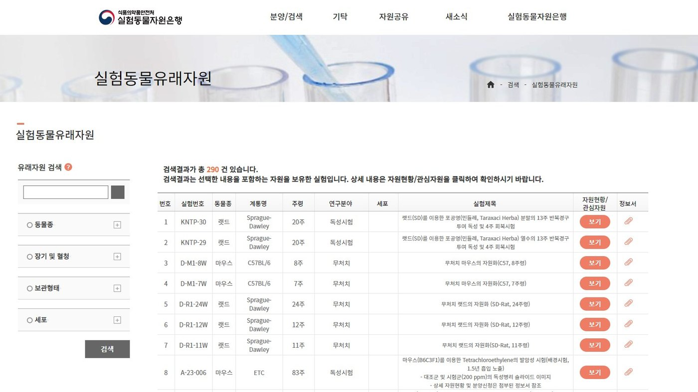
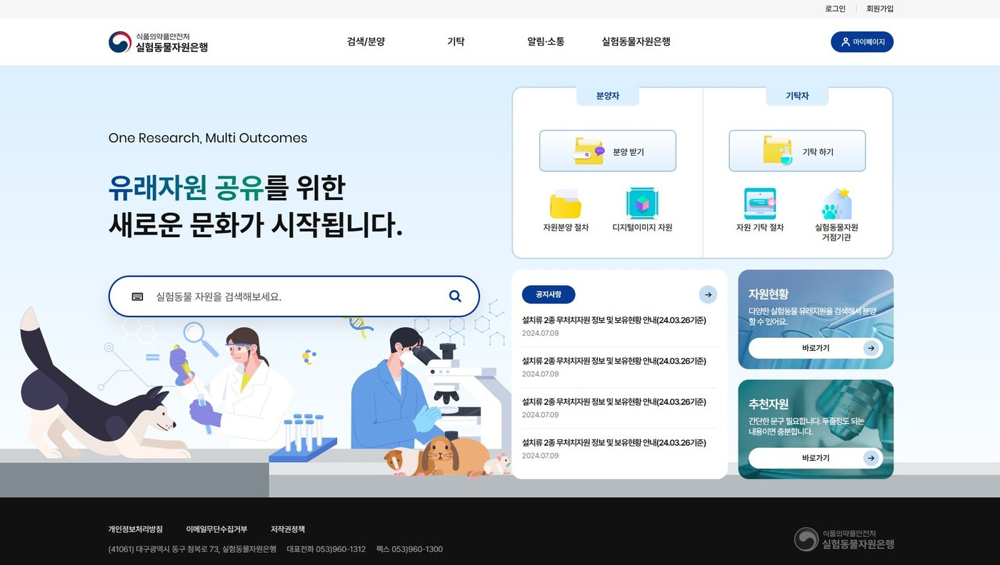
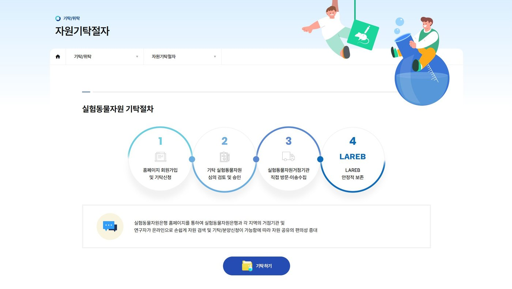
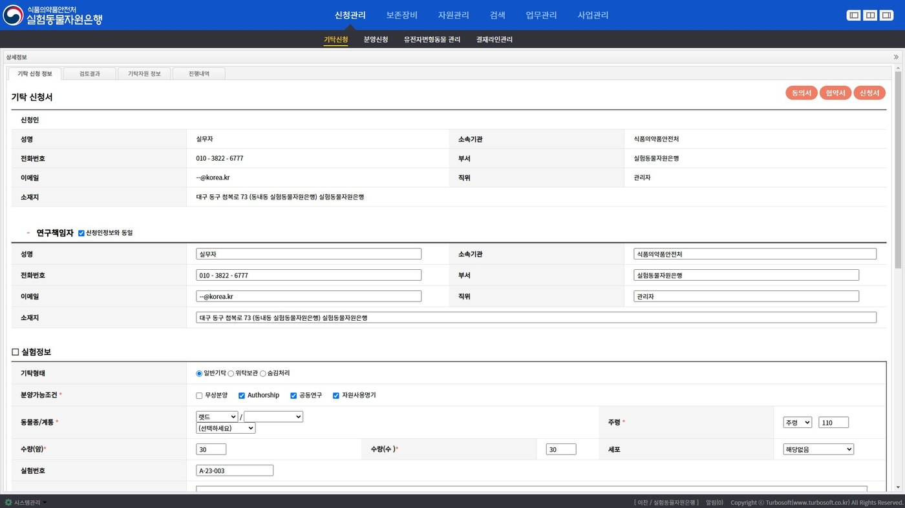
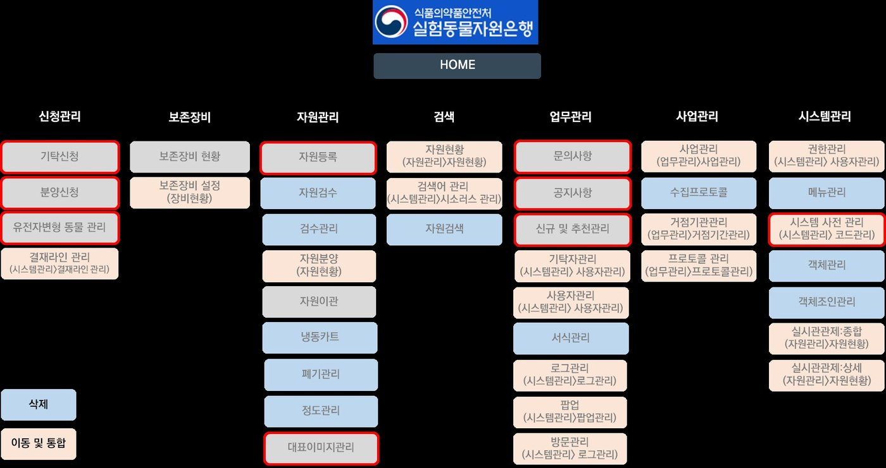
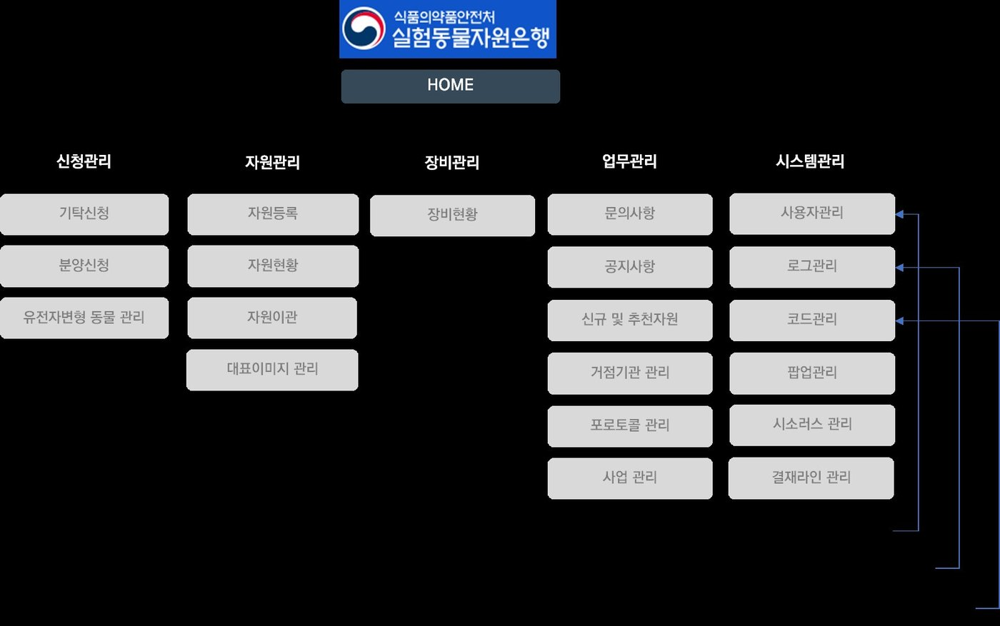
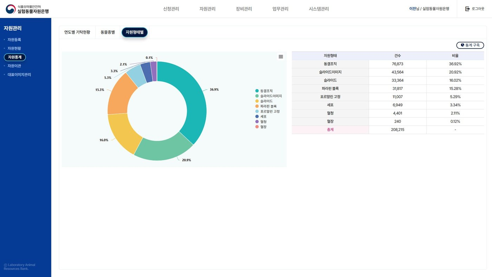

Project 05 / 10 · Planning · Public information system · 2024 to 2026
Laboratory Animal Resource Bank: specification and redesign
Specified the 2024 upgrade and planned the 2025 redesign: 38 menus to 20, 200 tables to 85, every planned item delivered.
- Client
- Laboratory Animal Resource Bank, Ministry of Food and Drug Safety
- Period
- 2024 to present
- Role
- IT service planner: screen specification, execution plan, menu redesign, operations
- Deliverables
- Screen specification (2024), execution plan and menu redesign (2025), releases, monthly security checks, reports
- Outcome
- Menus 38 to 20, database tables 200 to 85, every planned item delivered


2024: the specification
The upgrade began with a long list of requirements from the client. I turned it into a screen specification: every screen, every field, every input rule, written so that developers could build without asking and the client could check without guessing. The screens below are the result.


2025: the redesign
After years of additions the system carried menus that were no longer used and tables that held no data. As the project’s IT service planner I wrote the execution plan and restructured the whole menu: of 38 items, the 10 most used were kept, 17 similar ones were merged and 11 unused ones were removed, leaving five sections with 20 items. Once the empty and unused tables were cleared, 200 database tables became 85.



Since then
Day-to-day operations, monthly security checks, monthly and final reports.
Documents and screens
Laboratory Animal Resource Bank, screen specification (2024 upgrade)


Laboratory Animal Resource Bank, 2024 final report


Laboratory Animal Resource Bank, 2025 improvement proposal


Laboratory Animal Resource Bank, 2025 screen design